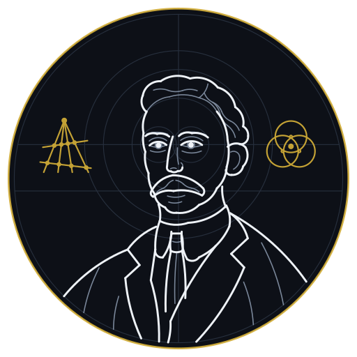

Bertrand Russell¶

Bertrand Russell (1872–1970) stood at the crossroads of nineteenth-century metageometry and twentieth-century logic—first deriving the axioms of projective and metrical space from Kantian a priori form in 1897, then overturning that view six years later to rebuild geometry inside the relational logic of pure mathematics. This dual Book Codex gathers both Cambridge University Press first editions complete with synchronized analytical summaries, notes, and cross-corpus concordances.
Books in This Collection¶
First Edition · 1897 (Cambridge) · §§ 1–209 · 9 Diagrams · 3 Tracks
An Essay on the Foundations of Geometry — Russell’s expanded Trinity Fellowship dissertation tracing the history of non-Euclidean metageometry (Lobatchewsky, Bolyai, Riemann, Helmholtz, Klein, Cayley) and deducing the projective and metrical axioms from the form of externality, complete with 171 author’s footnotes and 9 vector diagrams.
First Edition · 1903 (Cambridge) · Part I & Part VI: Space · §§ 351–436 · 3 Tracks
The Principles of Mathematics — The landmark 1903 logicist manifesto (Preface, Part I Ch. I, and all nine chapters of Part VI Space): formalizing projective, descriptive, and metrical geometry after Peano, Cantor, and Pieri, and articulating Russell’s celebrated critique of Euclid I.1 and superposition in I.4 (§§ 389–391).
Key Features¶
From Neo-Kantianism to Logicism
Compare Russell’s 1897 a priori defense of space side-by-side with his 1903 relational turn across 305 numbered sections and dedicated analytical commentaries in Evolution (1897–1903).
Hoenen, Heath & Pappus Concordance
The Cross-Corpus Concordance links Russell’s arguments directly to Fr. Peter Hoenen’s Thomistic critique (De Noetica Geometriae), T. L. Heath’s commentary on Euclid, and Pappus’s projective cross-ratio.
Reference & Project¶
Scholarly Apparatus
Cross-Corpus Concordance — Bidirectional mapping across Russell, Hoenen, Heath’s Euclid, and Pappus
Glossary — 27 projective, descriptive, metrical, and logicist terms
People & Bibliography — 44 biographical profiles and 24 primary/secondary editions
About This Project
About & Hoenen Dialogue — Scope, Cambridge witnesses, and epistemological debate
Using This Edition — Track switching and navigation guide